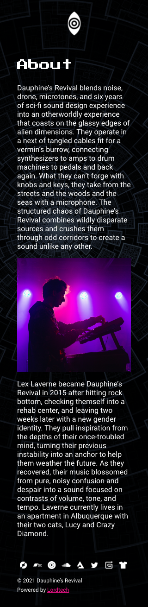
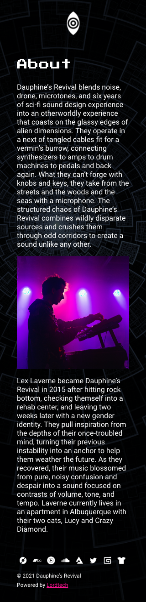

Project 2 Design Drafts
Iteration: P2.5
Notes
- Pink text represents hyperlinks.
- An exception to the above is the header navigation.
- Previous iterations of the final 320 draft, "linksmenu320.png", appeared gray in previous submissions due to a lower opacity. It was intended that the links menu would slide out from a side of the window when the eye icon is clicked, while the current page would be just barely visible underneath. I've altered the opacity to 100% for better accuracy.
320 Drafts
 



1440 Drafts